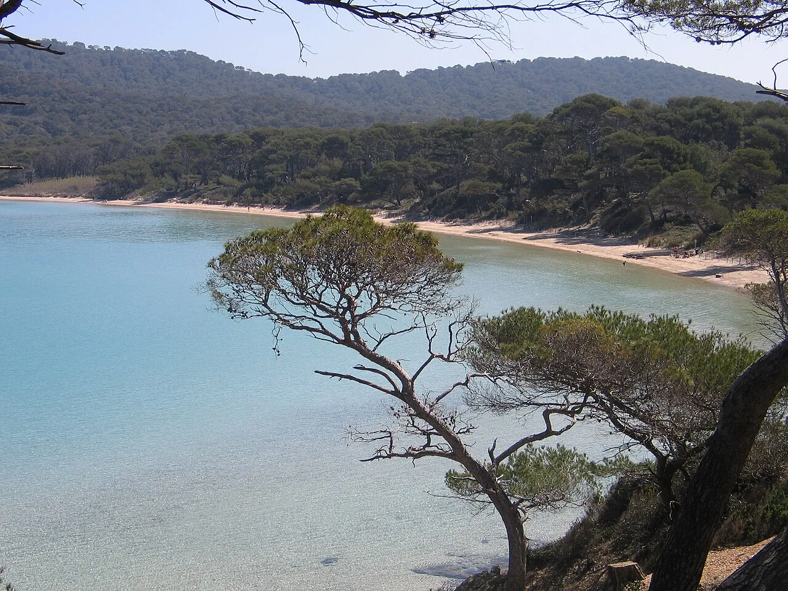

Plage Notre-Dame
Porquerolles, Var, France · snorkeling, baignade, kayak, paddle

Plage de sable blanc du Parc national de Port-Cros, au fond d’une baie de pins. L’eau très claire invite au snorkeling au-dessus des herbiers de posidonie.
- Lieu
- Porquerolles, Var, France
- Niveau
- Débutant
- Activités
- snorkeling, baignade, kayak, paddle
- Type d'eau
- Mer / océan
- Coordonnées
- 43.01, 6.23 (position approximative du secteur)
Dangers à connaître
- Passage de bateaux au large de la plage.
- Herbiers protégés : ne pose pas le pied dessus.
Le conseil d'Ocean Buddy
Arrive tôt : l’île est très fréquentée en été et les bateaux-navettes arrivent à partir du matin.
Ouvrir dans Ocean Buddy Télécharger sur l'App Store
Source : Fiche Ocean Buddy · septembre 2026 · à vérifier localement.